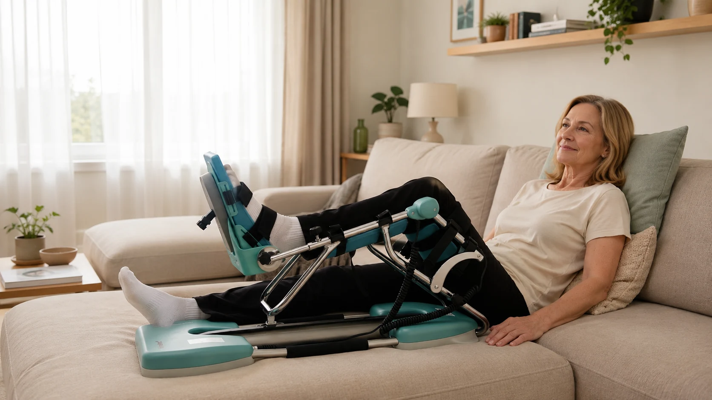

Bij een tuberositas-transpositie verplaatst de orthopedist het botblokje onder uw knie waar de kniepees aan vastzit. Zo loopt uw knieschijf opnieuw mooi in haar gleuf. De ingreep gebeurt meestal bij een knieschijf die telkens uit de kom gaat of bij hardnekkige pijn achter de knieschijf. De revalidatie is een evenwichtsoefening: het botblokje moet rustig vastgroeien, maar uw knie mag intussen niet verstijven. Daarom schrijven veel chirurgen een kinetec voor thuis voor. In dit artikel leest u wat de operatie inhoudt, waarom passief bewegen veilig is, hoe een voorbeeldschema in graden eruitziet en waar u de eerste weken op let.
Kort samengevat
Na een tuberositas-transpositie is de buiging van de knie de eerste zes weken meestal begrensd, vaak tot 90°. De kinetec buigt uw knie passief en binnen die grens, zodat uw dijspier niet aan het botblokje trekt. U start laag, rond 0–40°, en bouwt op volgens het schema van uw chirurg.
Wat is een Tuberositas-transpositie?
Net onder uw knie, vooraan op het scheenbeen, voelt u een benige knobbel: de tuberositas tibiae. Daar hecht de kniepees aan, de pees die uw knieschijf met het scheenbeen verbindt. Staat die knobbel te ver naar buiten of te hoog, dan wordt de knieschijf bij elke beweging scheef getrokken. Ze kan dan uit haar gleuf schieten of het kraakbeen aan de achterkant raakt overbelast.
Bij een tuberositas-transpositie zaagt de chirurg het botblokje met de pees eraan los, verschuift het enkele millimeters naar binnen, naar voren of naar beneden, en zet het vast met meestal twee schroeven. De ingreep wordt onder meer uitgevoerd bij:
- Een knieschijf die herhaaldelijk uit de kom gaat. Vaak wordt dan tegelijk het bandje aan de binnenkant van de knieschijf hersteld (een MPFL-reconstructie). Meer daarover leest u in ons artikel over de kinetec na een patellaluxatie.
- Een hoogstaande knieschijf (patella alta), waarbij de knieschijf te laat in haar gleuf komt.
- Aanhoudende pijn achter de knieschijf door een scheve sporing of kraakbeenschade, wanneer oefentherapie onvoldoende hielp. Lees ook ons artikel over het patellofemoraal pijnsyndroom.
Waarom de Revalidatie Voorzichtig Verloopt
Na de operatie hangt uw volledige strekapparaat, dus dijspier, knieschijf en kniepees, aan een botblokje dat nog moet vastgroeien. Dat duurt gemiddeld zes tot acht weken. Elke keer dat u uw dijspier krachtig aanspant om het been te strekken, trekt de pees aan dat blokje. Daarom gelden er in die periode meestal duidelijke regels:
- Een brace of spalk die de knie gestrekt houdt tijdens het stappen.
- Krukken, met gedeeltelijke of volledige steun naargelang het voorschrift van uw chirurg.
- Niet actief strekken tegen weerstand en het gestrekte been niet zonder brace optillen.
- Een begrensde buiging, die in stappen wordt vrijgegeven.
Die voorzichtigheid heeft een keerzijde. Een knie die wekenlang gestrekt in een brace zit, wordt snel stijf. Rond de knieschijf en in de knieholte kunnen verklevingen ontstaan en de dijspier verzwakt. Hoe dat gebeurt, leest u in ons artikel over een stijve knie of artrofibrose voorkomen.
Waarom de Kinetec Hier zo Goed bij Past
Een kinetec of CPM-machine (Continuous Passive Motion) beweegt uw knie traag en gelijkmatig tussen twee ingestelde hoeken. Het toestel doet al het werk, uw spieren blijven ontspannen. Dat is na een tuberositas-transpositie precies wat nodig is:
- Geen trek aan het botblokje: omdat de beweging passief is, hoeft uw dijspier niet aan te spannen. Het strekken gebeurt door het toestel en niet door de kniepees.
- Een harde grens op de buiging: het maximum wordt ingesteld op de hoek die uw chirurg toelaat. Het toestel gaat geen graad verder.
- Een knieschijf die blijft glijden: bij elke cyclus schuift de knieschijf op en neer in haar nieuwe spoor, wat verklevingen helpt voorkomen.
- Minder zwelling: de ritmische beweging helpt vocht uit het gewricht afvoeren. Meer tips vindt u in ons artikel over knie zwelling na een operatie verminderen.
De kinetec vervangt uw kinesitherapeut niet. Hij zorgt er wel voor dat uw knie meerdere keren per dag veilig beweegt, ook op de dagen dat er geen behandeling is.

Voorbeeldschema na een Tuberositas-transpositie
Het schema hieronder is een voorbeeld. Chirurgen hanteren verschillende protocollen: sommigen geven de buiging sneller vrij, anderen houden het zes weken op 90°, zeker als tegelijk een bandje of kraakbeen hersteld werd. Het schema van uw eigen chirurg gaat altijd voor. Een algemeen overzicht vindt u in ons kinetec gebruiksschema in graden per dag.
20–30 min
30–45 min
chirurg het toelaat
actief oefenen
| Periode | Stappen en brace | Kinetec | Nog niet doen |
|---|---|---|---|
| Week 1–2 | Krukken, brace in strekking | Start rond 0–40°, opbouwen naar 60° | Been gestrekt optillen zonder brace |
| Week 3–4 | Krukken, brace in strekking bij het stappen | Opbouwen naar 90°, lage snelheid | Actief strekken tegen weerstand |
| Week 5–6 | Steun opbouwen volgens voorschrift | 90° aanhouden of verder tot 110° | Diep hurken, trappen op zonder leuning |
| Vanaf week 7 | Brace en krukken afbouwen na controle | Vrije buiging, daarna stoppen | Springen, lopen en draaisporten |
De Kinetec Veilig Instellen en Gebruiken
- Laat het maximum begrenzen. Bij de levering stellen wij de buiglimiet in op de hoek uit uw voorschrift. Verhoog die enkel wanneer uw chirurg of kinesitherapeut een nieuwe fase vrijgeeft.
- Kies een lage snelheid. Traag bewegen geeft uw spieren de tijd om ontspannen te blijven.
- Help niet mee. Span uw dijspier niet aan om het toestel te “helpen” strekken. Laat het been zwaar in de steunen liggen.
- Vraag of de brace af mag. De meeste chirurgen laten toe dat u de brace tijdens de kinetec losmaakt of uitdoet. Vraag dit na, want het hangt af van uw operatie.
- Zorg voor volledige strekking. Zet het minimum op 0° zodat de knie bij elke cyclus helemaal gestrekt ligt.
- Lig comfortabel. Half zittend in bed of op een brede zetel werkt het best. Tips vindt u in ons artikel over de opstelling van de kinetec in bed of zetel.
Hoe u de hoeken, snelheid en pauzes precies aanpast, leest u in onze handleiding voor het instellen van de kinetec.
Pijn, Zwelling en Alarmsignalen
Een trekkend gevoel vooraan de knie op het einde van de buiging is normaal, net als een gezwollen en wat blauw onderbeen in de eerste week. Zo houdt u het draaglijk:
- Neem uw pijnstilling ongeveer een half uur voor een sessie. Lees ook ons artikel over pijnstillers en de kinetec.
- Koel na elke sessie tien tot vijftien minuten met een coldpack in een handdoek.
- Leg het been hoog tussen de sessies, met de knie gestrekt.
- Beweeg uw enkel en tenen regelmatig om de bloedsomloop te stimuleren.
Stop de kinetec en contacteer uw chirurg bij:
- Een plotse knak of scherpe pijn ter hoogte van het botblokje onder de knie, zeker na een val of een verkeerde beweging
- Niet meer kunnen aanspannen van de dijspier terwijl dat voordien wel lukte
- Koorts boven 38°C of een wonde die rood wordt en vocht afgeeft
- Pijn, zwelling en warmte in de kuit, wat op een trombose kan wijzen
Na de Kinetec: Kracht Opbouwen
Wanneer de controlefoto toont dat het botblokje goed vastgroeit, meestal rond week zes tot acht, begint de actieve fase. Die verloopt onder begeleiding van uw kinesitherapeut:
- Week 6 tot 12: brace en krukken afbouwen, de dijspier opnieuw leren aanspannen en fietsen zonder weerstand, bijvoorbeeld op een hometrainer. Zie ook ons hometrainer schema na een knieoperatie.
- Maand 3 tot 4: kracht van dij, heup en kuit, trappen lopen, evenwicht en gecontroleerd door de knie buigen.
- Vanaf maand 4 tot 6: lopen en sporthervatting, in overleg met uw chirurg.
De dijspier is na deze ingreep vaak opvallend dun en traag. Oefeningen om hem wakker te maken vindt u in ons artikel over quadriceps-activatie na een knieoperatie. Hinderen de schroeven later bij het knielen, dan kunnen ze na ongeveer een jaar verwijderd worden. Lees daarover de kinetec na het verwijderen van schroeven uit de knie.
Kinetec Huren bij PhysioVisit
Bij PhysioVisit huurt u een professionele kinetec CPM-machine voor €17 per dag. We leveren en installeren het toestel overal in België, begrenzen het volgens het schema van uw chirurg en tonen u hoe u het veilig gebruikt. Plant de levering best vóór uw ontslag uit het ziekenhuis, zodat u thuis meteen kunt starten.
Woont u in de regio Grimbergen, Strombeek-Bever, Humbeek, Beigem of Koningslo? Dan begeleidt onze kinesitherapeut u ook thuis via kinesitherapie aan huis, wat handig is zolang u met brace en krukken moeilijk de deur uit kunt. Voor de fase na de kinetec kunt u een hometrainer huren voor €2 per dag.
Over de terugbetaling
De terugbetaling van een kinetec verloopt via uw verzekering, niet via de mutualiteit. Wij bezorgen u een factuur die u bij uw verzekeraar indient. Sommige polissen betalen alles terug, andere de helft of een beperkt bedrag. Vraag dit altijd na bij uw eigen verzekering. Meer uitleg vindt u in ons artikel over de kinetec terugbetaling in België.
Veelgestelde Vragen
Kinetec Nodig na uw Knieschijfoperatie?
Wij leveren en installeren uw kinetec aan huis in heel België en begrenzen het toestel volgens het schema van uw chirurg. Vanaf €17/dag.
Conclusie
Na een tuberositas-transpositie moet u twee dingen tegelijk doen: het botblokje beschermen en de knie soepel houden. De kinetec maakt dat mogelijk, omdat hij uw knie passief en binnen een vaste grens beweegt. Start laag, verhoog enkel wanneer uw chirurg een nieuwe fase vrijgeeft, help niet mee met uw dijspier en koel na elke sessie.
Wilt u een kinetec laten klaarzetten voor uw thuiskomst, of twijfelt u of het toestel in uw situatie zinvol is? Neem gerust contact met ons op. Lees ook hoe lang u een kinetec huurt en wanneer u stopt.